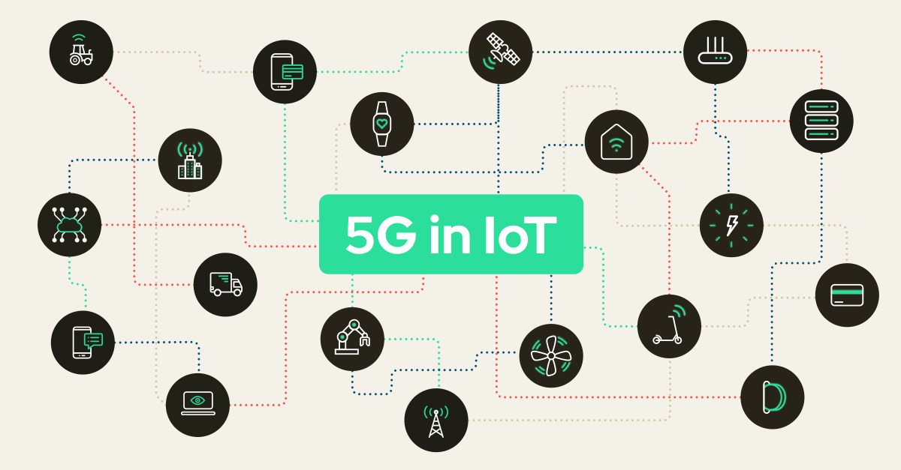

5G and IoT: Ushering in a New Era of Connectivity
By Bob Wilson
Published on October 5, 2024
Introduction
The convergence of 5G technology and the Internet of Things (IoT) is set to revolutionize connectivity, enabling a new wave of innovative applications and services.
Key Features of 5G
- Ultra-fast speeds: Up to 20 Gbps
- Low latency: Less than 1 millisecond
- Massive device connectivity
- Network slicing capabilities
How 5G Enables IoT
5G's capabilities address many of the limitations of current IoT deployments:
- Supporting a massive number of connected devices
- Enabling real-time data processing and decision-making
- Improving battery life for IoT devices
- Enhancing reliability and coverage
Potential Applications and Use Cases
- Smart Cities: Traffic management, waste management, public safety
- Industrial IoT: Remote monitoring, predictive maintenance
- Healthcare: Remote surgery, real-time patient monitoring
- Autonomous Vehicles: Vehicle-to-everything (V2X) communication
Conclusion
The combination of 5G and IoT is poised to transform industries and create new possibilities for innovation. As these technologies continue to evolve and integrate, we can expect to see groundbreaking applications that will reshape our connected world.
For more information on 5G and IoT, visit Example 5G and IoT Report.